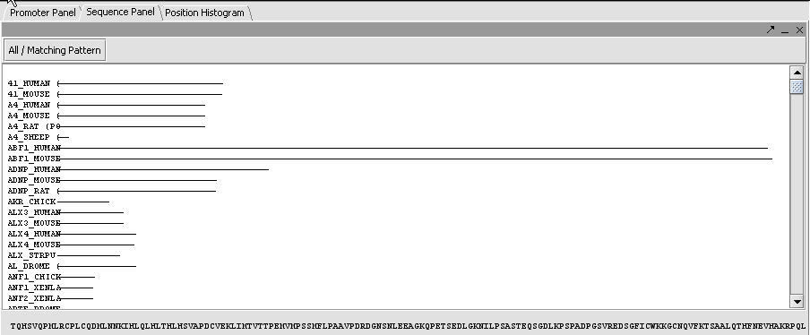
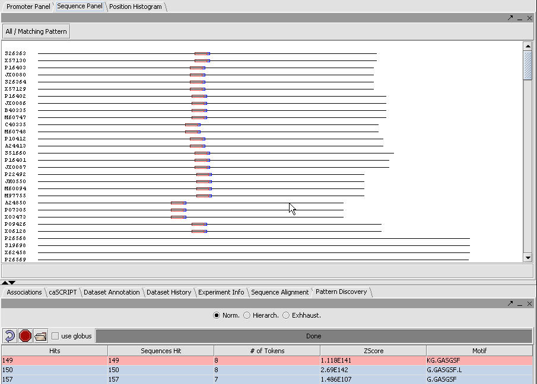

The Sequence Component is located in the top-right of the application. This component displays result from the Sequence Discovery Component located in the Analysis Area in the lower-right of the application. In this view, each sequence in the selected dataset is displayed as a thin red line proportional to the sequence length. Click on the individual lines to display the sequence details and at the bottom of the Sequence Component
View a Sequence Dataset
1. Load a sequence file into project.
2. Select a sequence dataset in the Project Area in the top-left section of the interface.
3. Then select the Sequence Component option in the View Area in the top-right section of the interface.
Navigating a Sequence Component
。 Clicking on an individual line at the bottom of the Sequence Component displays the sequence detail. The display of sequence is proportional to the click position in the line. If you click at the beginning of the line, the bottom will show the first part of the sequence. If you click the center place of a line, the bottom will show the middle part of whole sequence.
。 Use the right scroll bar to view all sequences.
。 Click on "All / Matching Pattern" to display only sequences with the specific pattern.

Use the Pattern Discovery Module to search for Patterns in the Selection Area in the lower-left of the application. The patterns can be viewed by selecting the hit of interest. The pattern will be displayed in the Pattern view, Promoter and the Sequence Component View. Each pattern (row) selection in the result of the Pattern Discovery Module displays a unique color in the Visualization components of Pattern, Promoter and Sequence Component View.

Load a Sequence File
1. In the Project Area of the application, right click a project node and select Open File or, from the top menu, File->Open>File
2. Select from the dropdown list Files of Type and select "FASTA Files"
3. Navigate to the sequence file that you want to load. FASTA files have a file extension of .FA
4. Click the Open push button. If the file is successful loaded, a new icon created under the project node. If unsuccessful, the application will display an error message.